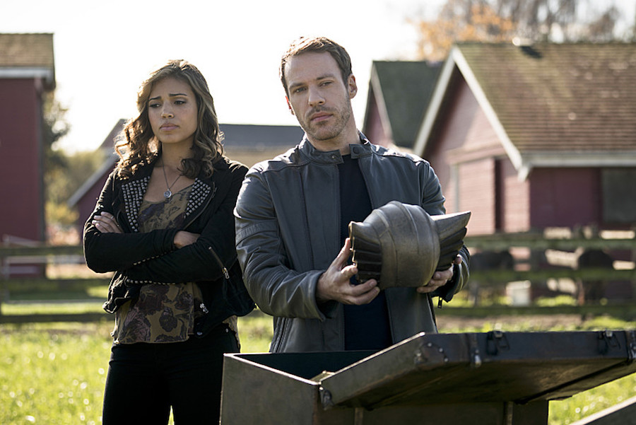

Arrow S04|E08 Legends of Yesterday
The benefit of airing later in the week than The Flash is that Arrow always seems to come out on top when it comes to crossovers. As with last year's big Team Flash/Team Arrow mashup, Tuesday's Flash episode was saddled with the setup and now Arrow gets to have fun with the payoff. Most of the storytelling and pacing problems from "Legends of Today" were addressed in this follow-up, allowing "Legends of Yesterday" to take full advantage of the alliance between Green Arrow, Flash, Hawkman and Hawkgirl.
When Arrow launched over three years ago, who would have ever expected an episode to open with a flashback to ancient Egyptand featuring Hawkman, Hawkgirl and Vandal Savage entering into an eternal struggle of love, murder and resurrection? Nearly every week both Arrow and The Flash make you marvel at just how deep their willing to mine the DC Universe for treasures. It was fun to see these glimpses into the distant past and the origin of this never-ending feud. I only wish the flashbacks were a little more successful when it came to selling the "eternal love" between Khufu and Shayera. There's a certain stiffness between actors Ciara Renée and Falk Hentschel that serves their characters well in the present, where they're long-lost lovers being reunited for the first time in their new lives. But in the past, it would have been nice to get a better sense (either in the writing or in the performances) of the passion that motivated them to choose an eternity of hardship over a quick death.
Still, this episode capped off a solid character arc for both Hawkman and Hawkgirl. All the key beats were there, from Carter rudely schooling Kendra in the ways of combat to Kendra facing her big moment of truth in battle to Kendra having to cut short her romance with Cisco. That last scene in particular was very bittersweet. The Flash has done a nice job of building up that relationship despite it only existing for a few episodes. Ideally, this won't be the end, either. One of the most interesting wrinkles writer Geoff Johns introduced to the Hawkman/Hawkgirl mythos in the early 2000's was the idea that, for the first time in their long history together, Hawkgirl refused to accept her supposed destiny and fall in love with Hawkman. Even if Cisco is out of Kendra's life for good, it would be interesting to see that dilemma play out in Legends of Tomorrow.
As for Vandal Savage, the villain left a somewhat better impression than he did in the first half of the crossover. There's still a certain raw charisma and physicality missing in Casper Crump's Savage that we see from villains like Damien Darhk and Zoom, but Savage put up much more of a fight this time. How many other villains can boast that they burned Green Arrow to cinders and turned an entire city into a smoking crater? My concern is that Savage simply doesn't quite have what it takes to serve as a worthy main villain for Legends of Tomorrow. If he can be defeated once by some efficient teamwork between Team Flash and team Arrow, why would he fare any better once the likes of the Atom, Captain Cold and Rip Hunter enter the fray? However, that final scene with Malcolm Merlyn was certainly intriguing. It suggests that there's more to Savage's role in Legends of Tomorrow than has been made apparent, and also that the League of Assassins will be playing a part. Maybe Merlyn will redeem the name of Ra's al Ghul after all.

That twist was one of several unexpected swerves this episode took along the way. The biggest surprise was the role of time travel in the conflict. After the Season 1 Flash episode "Out of Time," it's a given that whenever Barry sees a ghost of himself it's a sign something terrible is about to go down. That certainly lent the episode a strong sense of foreboding as the fight with Savage loomed. And with that fight unfolding barely halfway into the episode, it was clear things weren't going to go as planned. You can argue that time travel gives the writers a convenient mulligan, but it was still tough to see so many of our heroes fall in battle even knowing that Barry would simply run his way back to the past. Rather than rob this episode of its drama, the time travel element succeeded in showing just how bad things could get and giving our heroes the motivation they needed to be better. Because of it, Kendra found her confidence, Ollie avoided becoming distracted and everyone worked together as a real super-team. With the real final battle against Savage, it was almost like seeing the Justice League on screen. Some day...
Like "Legends of Today," there was a subplot that played out over the course of this episode that was largely removed from the rest of the conflict. Unlike the Harrison Wells subplot on The Flash, however, Ollie's struggle fit much more naturally into the bigger picture. The whole point is that he was too distracted by the discovery of the son he never knew he had to properly prepare for one of the most important fights of his life. Stephen Amell delivered a great performance throughout this story. We've seen plenty of Ollie the dark vigilante over the years. This season has also showcased a happier, more cheerful Ollie. But this was a side of Ollie we rarely see - confused, emotionally adrift and utterly alone. Amell was great about conveying the character's desperation and longing to embrace this new part of his life.
This is another area where the time travel element really helped. Ollie refusing to let Felicity in on his new secret caused an abrupt implosion of their relationship. While sudden, that breakup was certainly justified given the circumstances. Barry travelling back in time allowed everyone the chance to undo their mistakes and embrace a second chance. Yet we saw Ollie stumble down the exact same path Barry warned him to avoid. He's still keeping this secret from the one person in his life that deserves total honesty. Perhaps it won't destroy their relationship as quickly as it did in "the darkest timeline," but it's clear that it's something that could drive a wedge between Ollie and Felicity all the same. That's a sobering thought as the show bids farewell to its guest stars and resumes focus on its ongoing storylines.
Next weeks episode preview: